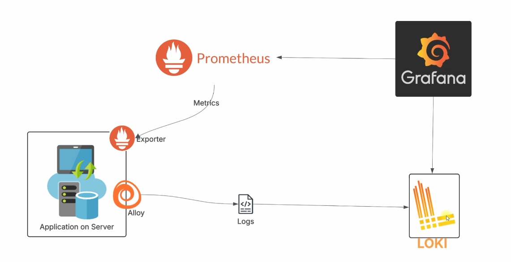
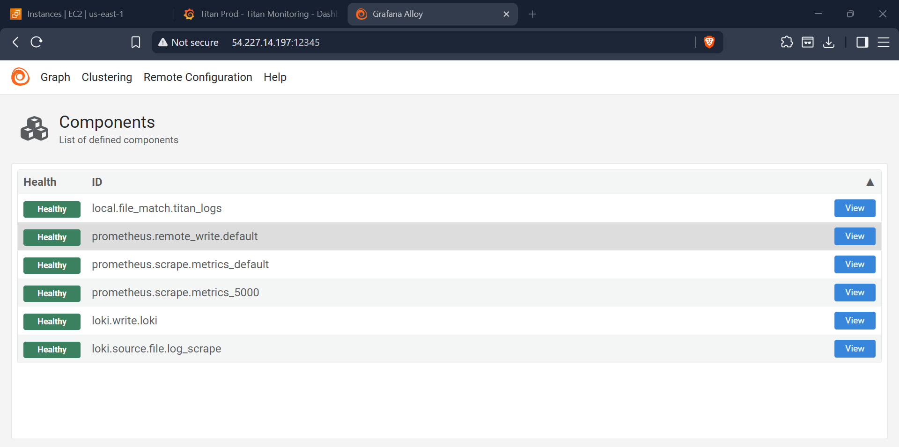
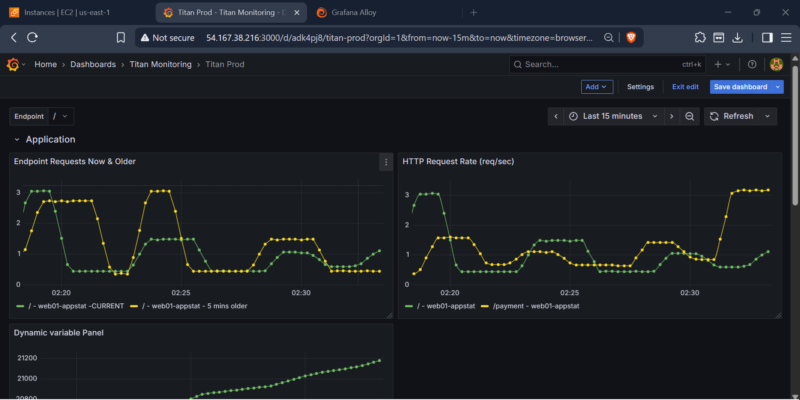
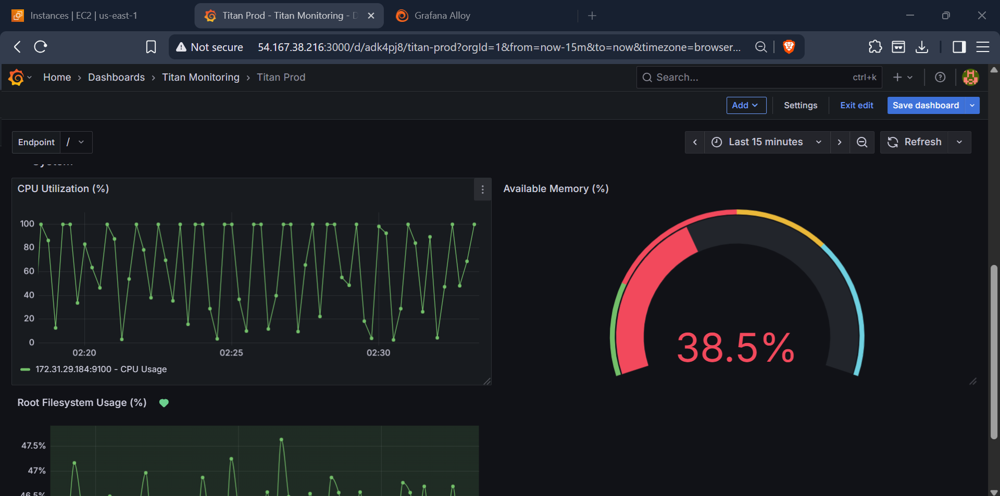
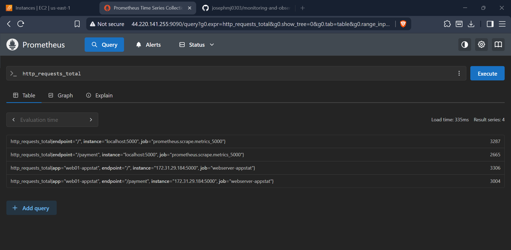
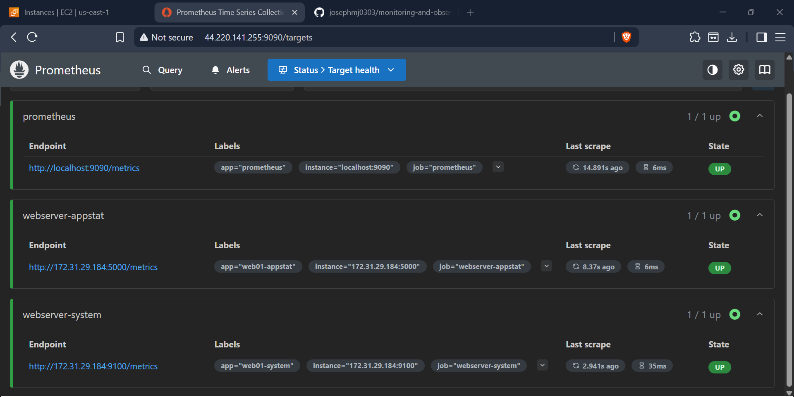
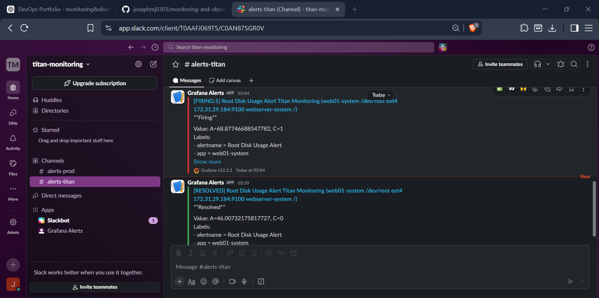

Production-ready observability platform built on AWS EC2 using Prometheus, Grafana, Loki, Grafana Alloy, Python Flask, and Slack notifications for real-time monitoring, log aggregation, visualization, and alerting.

This project demonstrates the implementation of a modern Monitoring and Observability Platform designed to provide end-to-end visibility into application and infrastructure health. The platform collects metrics using Prometheus, aggregates logs using Loki, and visualizes operational data through Grafana dashboards. Grafana Alloy serves as the telemetry collection agent, while a Python Flask application generates real-world monitoring data and log events. The solution is deployed on AWS EC2 and integrates Slack notifications for proactive alerting, enabling rapid detection and response to operational issues. The project showcases key observability concepts including metrics collection, centralized logging, dashboard visualization, alert management, and real-time monitoring workflows commonly used in production environments.

Grafana Alloy Telemetry Pipeline

Application Performance Dashboard

Infrastructure Metrics Dashboard

Prometheus Metrics Query

Prometheus Target Monitoring

Real-Time Alert Notifications